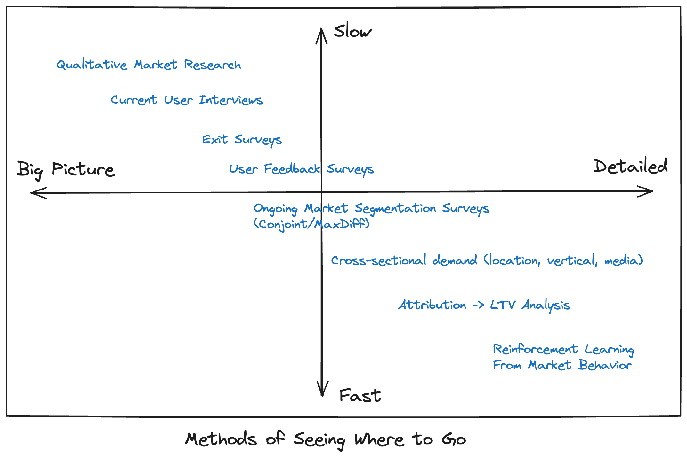
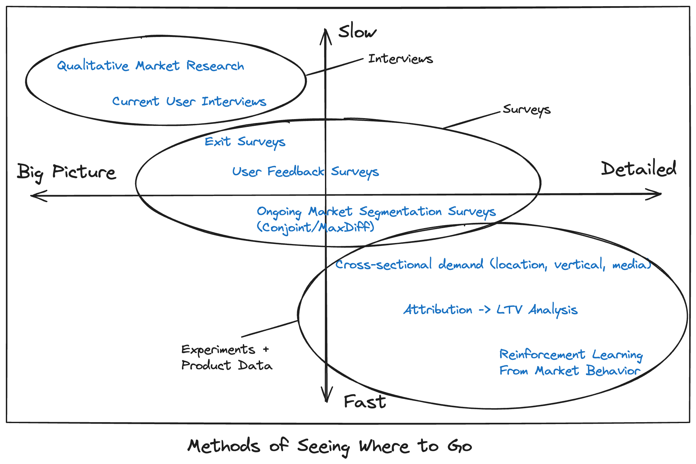
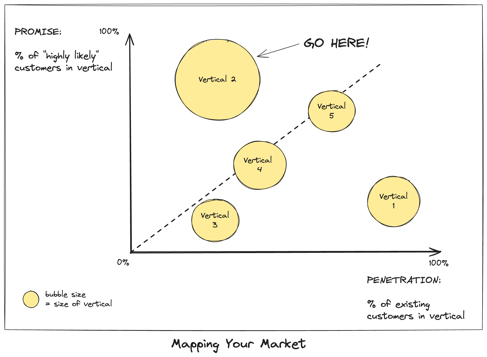

I think about organizational growth in terms of navigation and competition. Navigation refers to how an organization steers through its environment toward opportunities. Competition refers to the strategies and tactics an organization uses to fight.
Competitive strategy might determine where an organization “goes” in the long term. But I think navigation is equally essential, and not fully covered by classic strategic analysis (five forces, flywheels, zero-to-one, etc).
When your product is better than the competition, you can get huge growth by exploiting your advantages to the hilt: growing into open territory. To do that, navigating requires a clear picture of the landscape, not competitive calculations. If you could only see the opportunity, then you would simply go there. And the difference of a few degrees in direction might be the difference between hitting a vein of gold or missing it completely. Or, more modestly, the benefit of shifting your worst 30% of ads to the performance of your best 30%.
We can think of organizational navigation as the challenge of a self-driving car: First, it needs to see and recognize the features of the environment. Therefore…
Navigating in 2024
To navigate places, you have to have good sensors.
For growth strategy, your sensors are measures of what potential customers want, what they learn or know about you (and respond to emotionally), and “where” they exist online and off. Most companies have strong intuitions about these but they don’t always measure them well.
The techniques are pretty straightforward. They include:

These techniques (very) roughly use these data inputs:

To excel with at these techniques, there are three steps that take a concerted effort.
(1) Gather this data on a regular cadence.
Certain “slow” measurements (e.g. interviews) might happen twice a year. Certain fast measurements might happen every hour. But it is important to have predictability in these feedback loops so that people embed the information in their operations. These need to be really smooth: when people need the analysis, it should be at their fingertips, if not automating organizational tactics directly.
(2) Capture the same data about your target markets and your existing customers.
With data about your target markets and your existing customers, you get obvious charts that look like this:

The same chart can be produced for verticals or interest in product features or geographic regions or media audience and it can be modified to reflect cost to acquire a customer instead of scale.
A slight variation of this chart can show the % of highly likely customers in each vertical vs. the % of customers in each vertical who know about you (or have various perceptions of you). This can point to gaps.
(3) Study the same dynamics across interviews, surveys, and quantitative data sets.
It is classically true that interviews explain “why” someone might want or love your product but when, where, why, or how. That said, there are lots of established techniques for bridging interviews, surveys, and product data – but it requires planned coordination.
The payoff, of course, is that once you know what types of messaging consumers respond to (interviews), you can test those in your marketing material (experiments), and validate the impact on LTV (product data), and create feedback between techniques.
(4) Your navigation must support your locomotion.
The goal isn’t to change organizational behavior, it is to supercharge it.
Sticking with the “seeing where to go” analogy, we can consider the market’s response to two devices that want to change how people see things: the Facebook Quest VR headset and the Apple Vision Pro.
A strong signal that the Apple Vision Pro is succeeding is that people say they love using it for two specific activities: watching movies and reading email.
Facebook burnt billions of dollars trying to get people to do new things with Quest headsets, exploring their metaverse or playing brand new games. Meanwhile, Apple seems to have triumphed by producing a device that improves everyday lives. If everyday Americans will dump money on a home theater system, it isn’t such a stretch for them to buy the Vision Pro to make the same experience better.
Once people adopt the Apple Vision Pro for movies, or sports watching, or email, then the gateway opens to create new experiences. The same is true for growth feedback.